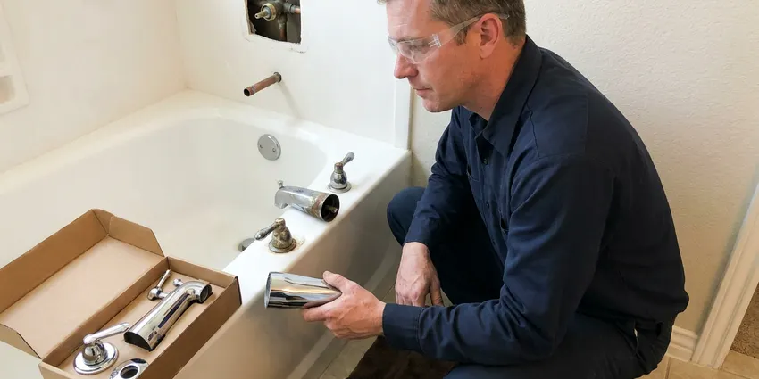

Faucet Repair in Victoria, TX
Is a dripping faucet driving you crazy in Victoria, TX? Our skilled plumbers are ready to tackle any repair, big or small.
- Fast Local Service
- Expert Plumbers
- Drip-Free Guarantee
- All Faucet Types

Stop Leaks, Call for Faucet Repair in Victoria, TX.
Our team is standing by to provide prompt and efficient faucet repair services.
Professional Faucet Repair Services in Victoria, TX
DFJ Plumbing offers comprehensive faucet repair services throughout Victoria and the surrounding Texas area. From a persistent drip to a completely broken handle, our experienced plumbers can diagnose and fix any faucet issue, ensuring your home's plumbing runs smoothly.
Our expertise includes:
- Fixing drips and leaks on all faucet types.
- Repairing or replacing worn-out internal components.
- Restoring proper water flow and temperature control.

Additional Bathroom Plumbing Services in Victoria, TX
From toilets to showers, our bathroom plumbing team in Victoria, TX handles repairs, installs, and upgrades with tidy, code-compliant work.


Customers
Why Choose DFJ Plumbing for Faucet Repair in Victoria, TX?
Ignoring a dripping faucet can lead to mildew, water damage to cabinets, and even structural issues. We provide timely and effective repairs to protect your home and your wallet.
- Water Conservation, Stopping leaks saves hundreds of gallons of water per year, which is crucial in Texas's often dry conditions.
- Prevent Damage, Prompt repairs prevent water stains, mold growth, and cabinet damage under sinks.
- Cost Savings, Eliminating drips reduces your water bill and avoids more costly repairs down the line.
Citywide Coverage
DFJ Plumbing proudly serves every neighborhood across Victoria, ensuring that no matter where you are, our expert plumbers are ready to provide reliable faucet repair. We understand the unique plumbing needs of homes throughout this area, from older established properties to new constructions.
Experienced Team
Our plumbing team brings years of specialized experience in faucet repair, understanding the intricacies of various brands and models common in Texas homes. They are continually trained on the latest repair techniques and equipped with the right tools for every job.
Safety-First Approach
We prioritize safety and code compliance in every faucet repair we undertake, ensuring all work meets local Victoria and Texas plumbing regulations. Our repairs are not just about fixing the immediate issue, but also about maintaining the integrity and safety of your home's plumbing system.
Trusted Certified Victoria Plumbing Services Professionals
At DFJ Plumbing, we take pride in providing licensed, certified plumbing services throughout Victoria, TX. Backed by leading industry credentials, our experienced plumbers combine technical skill with genuine customer care. Whether it is repair, installation, or maintenance, we follow strict safety and quality standards to deliver lasting results you can trust.
Call Us Now PHCC Plumbing Contractor Recognition
PHCC Plumbing Contractor Recognition Better Business Bureau (BBB) Accreditation
Better Business Bureau (BBB) Accreditation Angi Certified Pro
Angi Certified Pro ISO 9001 Quality Management Certification
ISO 9001 Quality Management CertificationDependable Faucet Repair Services in Victoria, TX
Leaky Faucet Repair in Victoria
A dripping faucet is more than just an annoyance, it's a waste of water and money. In Texas, where water conservation is always a concern, fixing a leak quickly is important. Our plumbers can identify the cause, whether it's a worn-out washer, O-ring, or a corroded valve, and replace the faulty components. We carry a wide range of common parts to ensure most leaky faucet repairs can be completed in a single visit, restoring your peace and quiet.

Cartridge Faucet Repair in Victoria, TX
Many modern single-handle faucets, commonly found in newer Texas homes, use a cartridge system. When these fail, you might experience inconsistent water temperature, reduced flow, or difficulty turning the faucet on or off. Our technicians are experts at diagnosing cartridge issues and replacing them with the correct manufacturer-specific part, ensuring your faucet functions like new. We work with all major brands to provide precise repairs.
Compression Faucet Repair in Victoria
Compression faucets, often found in older Victoria homes, are known for their separate hot and cold handles. When these faucets leak, it's typically due to worn-out rubber washers or packing. Our team is skilled in disassembling these classic fixtures, replacing the necessary seals and washers, and reassembling them to stop leaks effectively. We respect the character of older homes and ensure these repairs are done carefully.
Ball Faucet Repair in Victoria, TX
Ball faucets, recognizable by their single lever that moves over a rounded cap, are common in many Texas kitchens. They use a rotating ball joint to control water flow and temperature. If your ball faucet is leaking from the spout or base, or if the handle feels loose, it's likely time for a repair. We can replace the spring-loaded rubber seats and O-rings, which are usually the culprits, restoring smooth operation and preventing drips.
Disc Faucet Repair in Victoria
Ceramic disc faucets are known for their durability and are a popular choice in many contemporary Victoria bathrooms. While generally reliable, they can develop leaks if the ceramic discs become scratched or misaligned, or if the inlet and outlet seals wear out. Our plumbers have the expertise to carefully disassemble these precise mechanisms, clean or replace the ceramic discs, and reseal the faucet to eliminate leaks and restore optimal performance.
Commercial Faucet Repair in Victoria, TX
DFJ Plumbing also provides robust commercial faucet repair services for businesses throughout Victoria. High-traffic commercial faucets, from public restrooms to breakrooms, endure constant use and often require more durable parts and specialized repair techniques. We understand the urgency of commercial plumbing issues and offer prompt, efficient service to minimize disruption to your business operations and ensure compliance with health codes.
Emergency Faucet Repair in Victoria
Sometimes, a faucet issue can't wait. A severely leaking or broken faucet can quickly cause significant water damage, especially if it's spraying uncontrollably. We offer emergency faucet repair services in Victoria to address urgent situations promptly. Our team is equipped to respond quickly, mitigate damage, and provide immediate repairs to secure your property and prevent further water loss, even outside of regular business hours.

Specialty Faucet Repair in Victoria, TX
Beyond standard kitchen and bathroom fixtures, we handle repairs for specialty faucets such as pot fillers, utility sink faucets, and outdoor spigots common in Texas homes. These often require specific tools and knowledge due to their unique designs and usage. Whether it's a garden hose bib that won't stop dripping or a filtered water faucet under your sink, DFJ Plumbing has the expertise to diagnose and repair it correctly.
Faucet Repair Near Me in Victoria, TX
When you search for 'faucet repair near me' in Victoria, you want a local, reliable plumbing company that understands the unique challenges of Texas's climate and water conditions. DFJ Plumbing is your trusted local expert, ready to provide prompt and professional service right where you are. We are committed to serving our community with integrity and skill.
Our team lives and works in the Victoria area, giving us an intimate understanding of local plumbing systems and common faucet issues. This local presence means faster response times and a personalized approach to your faucet repair needs. You can count on us for dependable service that's always just a call away.
DFJ Plumbing at a Glance
- Licensed and insured plumbers serving Victoria, TX
- 24/7 emergency service with same-day scheduling
- Upfront, flat-rate pricing before work begins
- 4.9-star rated by 812+ Texas customers
Victoria Map
Victoria Information
- Population
- 65,800
- Area codes
- 361/979/210
- Service area
- Victoria and communities within 40 miles
- Nearby
- Corpus Christi, New Braunfels, San Marcos, Kyle
Given Texas's hard water and fluctuating temperatures, proactive faucet repair in Victoria is essential to prevent mineral buildup and extend the life of your plumbing fixtures, safeguarding your home from potential water damage.
Expert Services
Trust our professionals for reliable DFJ Plumbing solutions in Victoria, TX.
Our Specialized Plumbing Services in Victoria, TX
At DFJ Plumbing, we provide a complete range of plumbing services across Victoria, TX. From leak detection to full system installations, our team ensures fast, precise, and affordable service for both residential and commercial properties. Explore our core services below:


How Our Faucet Repair Process Works in Victoria, TX
Our faucet repair process is designed for efficiency and transparency, ensuring you get a clear understanding of the work being done.
Request a Quote
Call (737) 405-5978 or fill out our online form to schedule your faucet repair service. We'll gather some basic information about your issue and set up a convenient appointment time.
On-Site Diagnosis
A certified plumber will arrive at your Victoria home, assess the faucet problem, and pinpoint the exact cause of the leak or malfunction. We'll explain the issue clearly.
Expert Repair
Once the diagnosis is complete and you approve the estimate, our plumber will perform the necessary repairs using quality parts and proven techniques to ensure a lasting fix.
Frequently Asked Questions About Faucet Repair in Victoria
The cost of faucet repair in Victoria can range from $120 to $350, depending on the type of faucet, the specific parts needed, and the complexity of the repair. A simple washer replacement will be on the lower end, while a cartridge replacement in a high-end faucet might be more. We provide a clear estimate before any work begins.
Faucet repair involves fixing the existing fixture by replacing specific worn or broken internal components like washers, O-rings, or cartridges. Faucet replacement means removing the old faucet entirely and installing a brand new one. We recommend replacement when a faucet is severely damaged, very old, or if you simply want an upgrade.
Our plumbers are experienced in repairing all major faucet brands commonly found in Texas homes, including Delta, Moen, Kohler, American Standard, Pfister, and many others. We keep a stock of universal and common brand-specific parts to expedite repairs.
Texas is known for its hard water, which contains high levels of minerals like calcium and magnesium. Over time, these minerals can build up inside your faucets, corroding internal parts, clogging aerators, and stiffening moving components. This often leads to leaks, reduced water pressure, and decreased faucet lifespan, making regular maintenance or timely repair crucial.
Absolutely. A faucet dripping at just one drip per second can waste over 3,000 gallons of water per year. That's enough to take more than 180 showers! This continuous waste will definitely show up as an increase on your water bill, making prompt repair a good investment in Victoria.
While some minor leaks, like a simple washer replacement on a compression faucet, can be a DIY project, most modern faucets involve specific tools and intricate parts like cartridges or ceramic discs. Incorrect repairs can lead to further damage, more significant leaks, or voiding warranties. It's often best to call a professional to ensure a proper and lasting fix.
Most standard faucet repairs, such as replacing a washer or cartridge, can be completed by an experienced plumber in about 30 minutes to an hour. More complex issues or specialty faucets might take longer, but we strive for efficient service to minimize disruption to your home in Victoria.
For a standard faucet repair, where only internal components are replaced and the fixture itself remains, no plumbing permits are typically required in Victoria. However, if the repair involves altering the existing plumbing lines or installing a new type of fixture that requires new connections, a permit might be necessary. We will advise you if any permits are needed for your specific situation.
What People Are Saying About Our Plumbing Experts?

Patricia H.
We had a slab leak that two other companies could not find. DFJ Plumbing located it in under an hour, explained our options, and the price matched the quote to the dollar.
Slab Leak Repair · Missouri City, TX
Daniel K.
A pipe burst at 11 pm and they actually answered. The plumber showed up within the hour, shut everything down, and had us back to normal the next morning. Could not ask for more.
Emergency Plumbing · Corpus Christi, TX
Robert G.
The trenchless sewer replacement saved our front yard. They walked us through the camera inspection footage first so we knew exactly what we were paying for.
Sewer Line Replacement · New Braunfels, TX
Emily R.
I called DFJ Plumbing for plumbing repair, and the technician was fast, polite, and thorough. They explained the problem clearly and fixed it the same day. I will definitely hire them again. Highly recommended!
Plumbing Repair · Missouri City, TX
Laura S.
I scheduled a water heater replacement, and the team made the process smooth and affordable. The new unit works perfectly, and they cleaned up after completing the job.
Water Heater Replacement · Missouri City, TXJames P.
Our commercial plumbing system had a leak under the sink, and DFJ Plumbing handled it professionally. The plumbers arrived quickly and restored everything without disruption to our customers.
Commercial Plumbing · Corpus Christi, TX